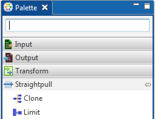
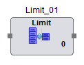

Limit
Limit component accepts the count of records that need to be displayed from the input attached to it and sends them to the output. It is present under the Straight Pull category in the component palette since no transformations are performed on the incoming data.
Limit has a single input port and transmits number of records requested by user through a single input port to output port. It does not have an unused port on it.
The Limit component can be easily distinguished in the component palette.

An enlarged version of the same is depicted when dragged on the canvas.

For further reference click on the links below: